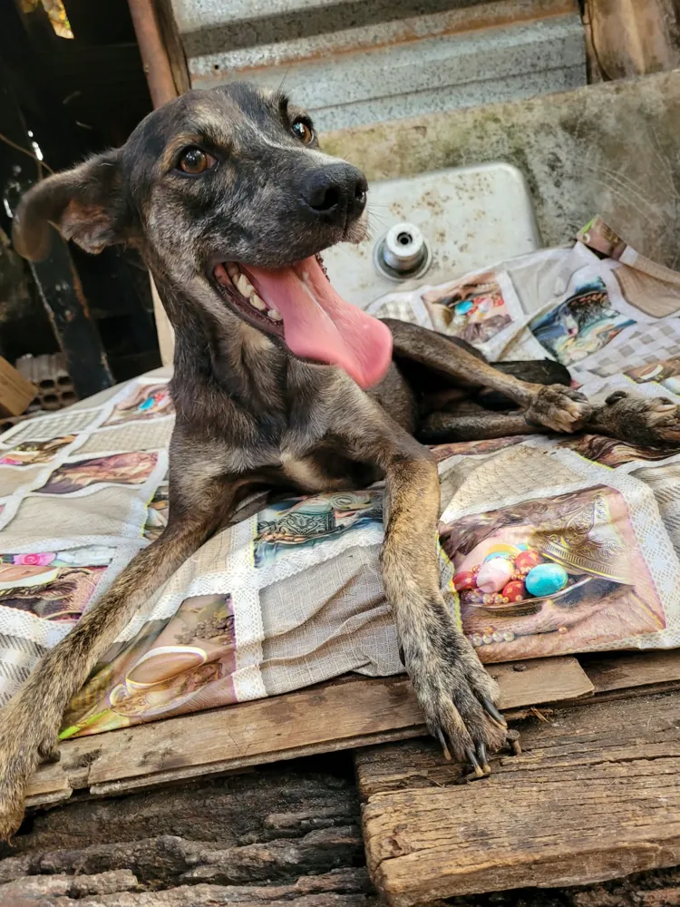

🐾 História de resgate
RecuperaçãoUm novo começo

Antes • ResgateDepois • Recuperação
Este cão passou por atendimento e cuidados com apoio de pessoas da comunidade. O acompanhamento, o acolhimento e a dedicação dos voluntários fazem parte da caminhada até uma vida com mais segurança e bem-estar.
Resgate
Cuidados
Nova chance